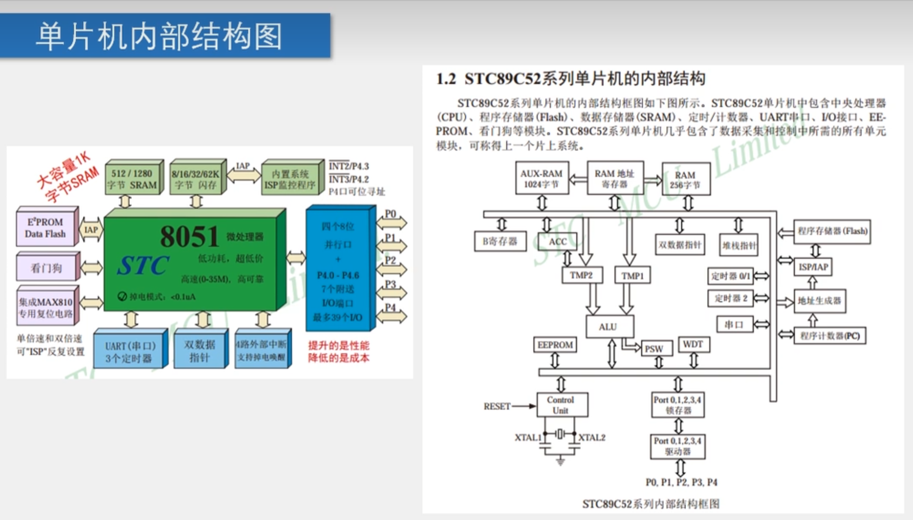
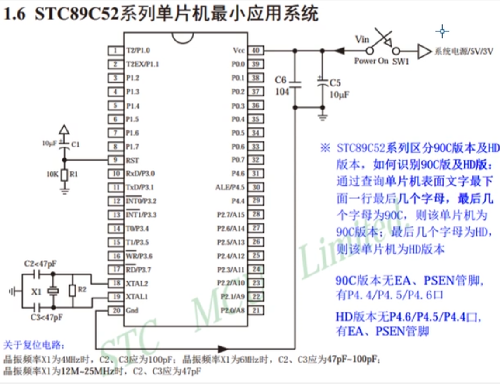
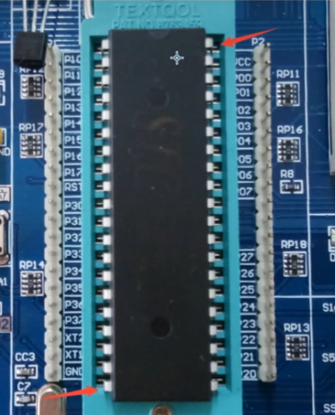
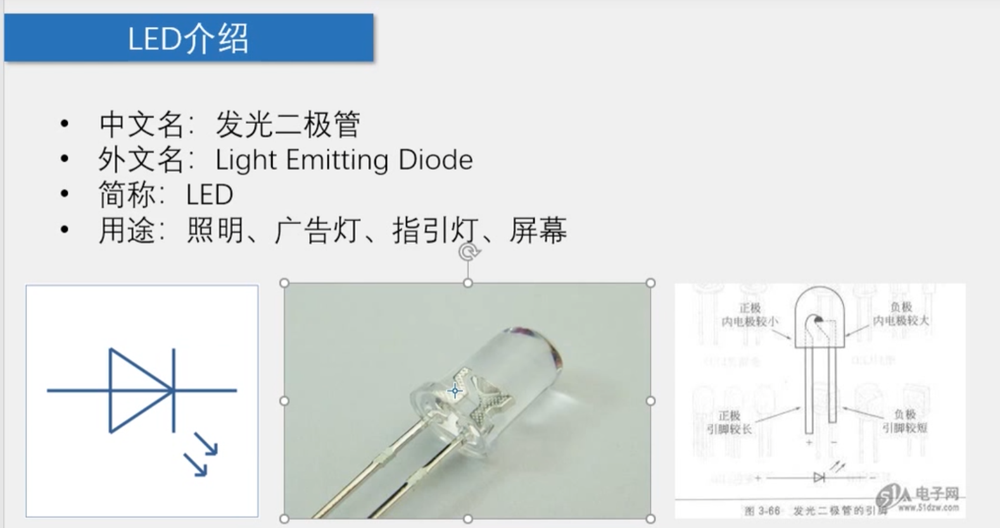
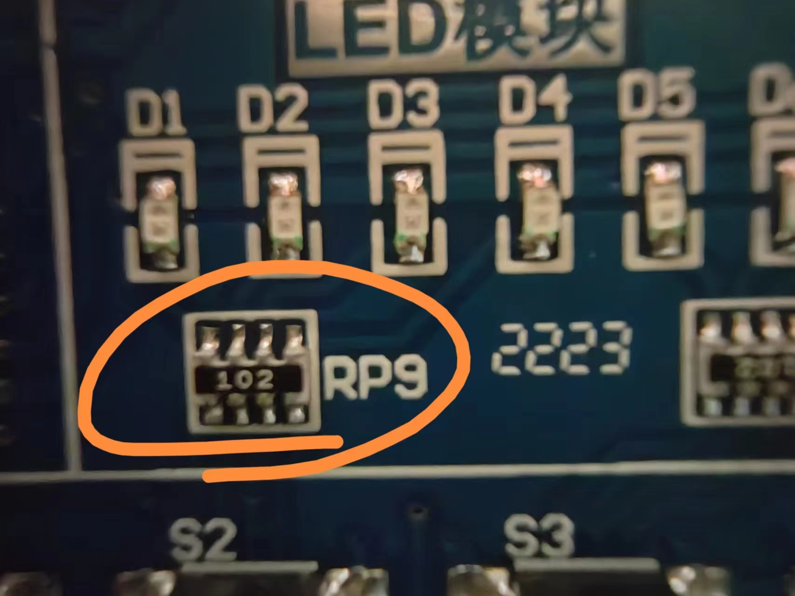
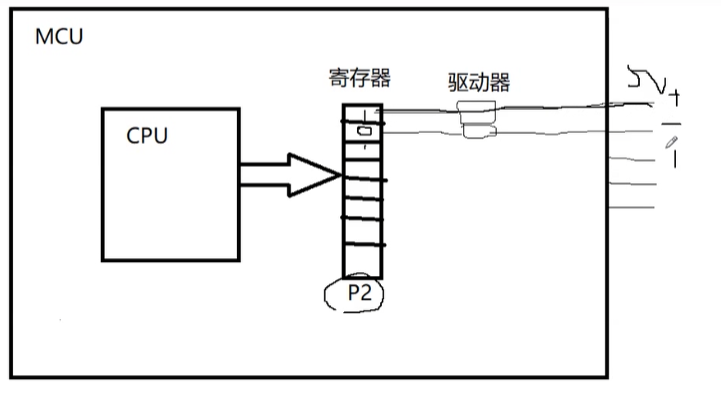
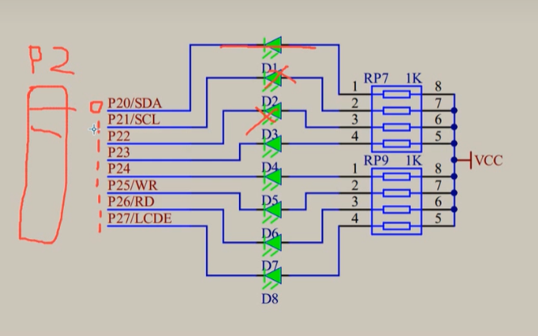
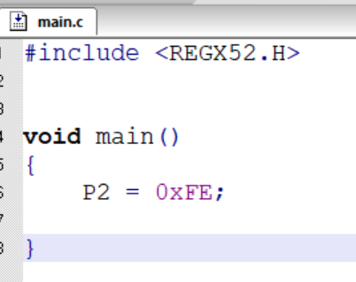
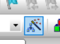

51单片机入门 1
51单片机入门
什么是单片机
单片机（Single-Chip Microcomputer）是一种集成电路芯片，是采用超大规模集成电路技术把具有数据处理能力的中央处理器CPU、随机存储器RAM、只读存储器ROM、多种I/O口和中断系统、定时器/计数器等功能（可能还包括显示驱动电路、脉宽调制电路、模拟多路转换器、A/D转换器等电路）集成到一块硅片上构成的一个小而完善的微型计算机系统，在工业控制领域广泛应用。从上世纪80年代，由当时的4位、8位单片机，发展到现在的300M的高速单片机。
单片机又称单片微控制器，它不是完成某一个逻辑功能的芯片，而是把一个计算机系统集成到一个芯片上。相当于一个微型的计算机，和计算机相比，单片机只缺少了I/O设备。概括的讲：一块芯片就成了一台计算机。它的体积小、质量轻、价格便宜、为学习、应用和开发提供了便利条件。同时，学习使用单片机是了解计算机原理与结构的最佳选择。
为什么叫51单片机
51单片机是对兼容英特尔8051指令系统的单片机的统称。51单片机广泛应用于家用电器、汽车、工业测控、通信设备中。因为51单片机的指令系统、内部结构相对简单，所以国内许多高校用其进行单片机入门教学。

上图是单片机的一种经典结构，现在可以忽略不看
这是接口

上图里，VCC表示电源的正极，GND是负极。而XTAL1，和XTAL2的两个接口则是表示单片机的时钟接口

单片机也是机，要供电吃饭。系统电源给单片机供电，其电容是为了稳定的单片机供电（蓄水池）。
而右下角是晶振电路，是为了使单片机程序一步一步运行（固定发出信号）。
在实际上安装单片机的时候，一定要注意正负极！！！看清楚有凹槽的一段右侧是VCC接口，对面左下的是GND接口！

Light UP OUR FIRST LED
我们兴建一个工程，选择好文件夹并完成对工程文件夹的命名之后，选择器件，可以看到一个选择器件的对话框，选择AT89C52即可，随后在Target1 -> Source Group里开始编写程序。
我们添加好C文件

扩展：电阻表示

看到这个102了嘛？这表示的是 1 0 后面跟上两个0 就是 1K的电阻。再比如 473 就是47000 欧姆电阻。
单片机怎么控制原件的？
单片机是集成 CPU 的，外部的引脚同寄存器，通过驱动器（来增大驱动能力）来相连接，这样我们就可以直接向寄存器里写值！

这样，我们就理解为什么是8 个口了（8位操作系统）

回到 LED 电路里，为了使第一个灯亮起来，我们就对D1口（P20）处写入0，余下写1（这样其他电平一致，没有电流通过，反之另一个有），这样只有D1会亮！小端法就是1111 1110，十六进制就是 0xFE

然后，选择：

选择output 生成 hex 文件 随后再次编译即可.
当然可以循环闪！
#include <REGX52.H>
unsigned int arr[8] = {0xFE,0xFD,0xFB,0xF7,0xEF,0xDF,0xBF,0x7F};
void main()
{
unsigned int i = 0;
unsigned int j = 0;
for(j=0;j<8;j++){
P2 = arr[j];
for(i = 0; i<30000;i++)
;
}